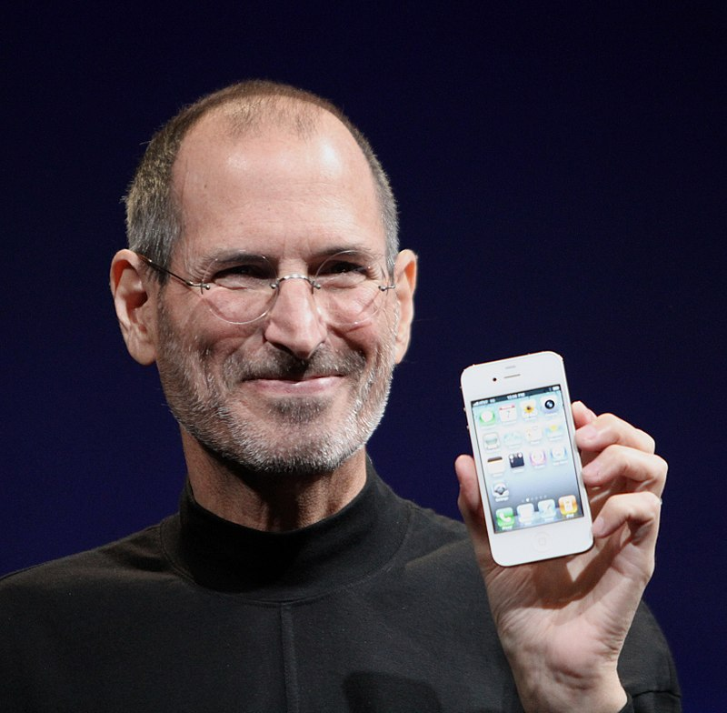

Steve Jobs
O gênio da maçã

'Matthew Yohe' as the author.
Steve Jobs apresentando primeiro iPhone ao
mundo.
Biografia de Steve Jobs
- 1955 - Nasceu em São Francisco, Califórnia. Adotado pelo casal Jobs.
- 1972 - Conclusão do High School. Começo da amizade com Steve Wozniak.
- 1973 - Criação da Blue Box, primeira criação dos Steves.
- 1974 - Primeiro emprego. Design de videogames na Atari.
- 1976 - Criação da Apple e do primeiro computador pessoal Apple I.
- 1977 - Lançamento do Apple II.
- 1978 - Nascimento de sua primeira filha Lisa Brennan-Jobs. Fruto do relacionamento com Chrisann Brennan.
- 1984 - Lançamento do Macintosh. Por seu temperamento, Steve Jobs é afastado da Apple.
- 1986 - Steve Jobs compra a Pixar e cria a NeXT.
- 1991 - Casamento com Laurene Powell. O casal teve 3 filhos Eve, Brin e Reed Jobs.
- 1997 - Retorno de Steve Jobs ao cargo de CEO da Apple.
- 2001 - Lançamento do iPod. O dispositivo fez uma revolução na indústia da música.
- 2007 - Lançamento do iPhone. Outra grande revolução no mundo móvel.
- 2011 - Falece no dia 05 de outubro aos 56 anos
“Meu modelo de negócios são os Beatles. Eles se balanceavam e o total era melhor do que a soma das partes. É assim que eu vejo os negócios: coisas boas nunca são feitas por uma pessoa, mas sim por um time de pessoas”.Steve Jobs